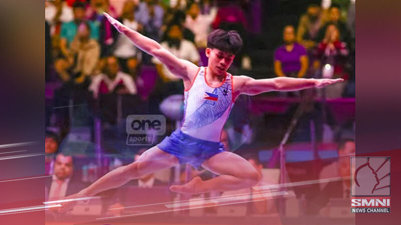

Christian McCaffrey leads 49ers to victory against former team Panthers and says “it’s really just business”
Christian McCaffrey helped the San Francisco 49ers to a 20-9 victory over his former team, the
Carolina Panthers on Monday Night Football, he enjoyed a big night afterwards.
The running back joined the Niners back in 2022, but this was his first time facing the team that
drafted him back in 2017.
The 29 year old Christian McCaffrey seemed relaxed about the big night and set about leading
his current team to a much-needed win. McCaffrey stood out as he gained 142 total yards and
scored a touchdown.
After the game, McCaffrey told reporters “When it comes to playing in this league, you have to
approach each week as similar as possible, stay in your routine,”
With his receiving performance, McCaffrey became just the third running back in league history
to have over 50 yards in the air in at least 50 career games, along with Larry Centers and
Marshal Faulk.
While the 49ers may have won the game, the contest wasn’t pretty at times. San Francisco
made multiple fouls in the first half, exemplified in part by an underwhelming performance from
quarterback Brock Purdy.
Purdy was intercepted three times in the first half, which Carolina’s offense squandered, scoring
only three points off the turnovers, but the signal-caller refused to blame a recent toe injury
for his poor display.
Meanwhile, the Panther’s, failed to capitalize on their opponents’ early struggles with
quarterback Bryce Young who threw 18-of-29 for 169 yards, one touchdown and two
interceptions.
After the Panthers safety Tre’Von Moehrig was seen hitting San Francisco receiver Jauan
Jennings in the groin during the closing moments, Jennings responded by striking Moehrig in
the head, leading frustrations to bubble over.
Moehrig, though, acknowledged he might be fined for his actions.
The 49ers now have an 86% chance of making the playoffs, while the defeat means the
Panthers now have just a 14% chance of reaching the postseason, despite sitting just half a
game back of first in the NFC South.

Eldrew Yulo now training in Japan in hopes of making it to Olympics
Eldrew Yulo will head to Japan to continue his training after his campaign in the 3rd FIG Artistic
Gymnastics Junior World Championships.
Although he didn't win a gold or silver, he took home
two bronze medals for the floor and horizontal bar events
Eldrew Yulo is a Filipino male artistic gymnast. He was born on August 29, 2008 in Manila,
Philippines.
In 2023, at the national games Palarong Pambansa, Yulo won six gold medals in the
secondary boys’ artistic gymnastics division he defeat the
dominating floor, vault, horizontal bar, pommel horse, all-around, and team events.
He also won 7 gold medals at 2023 Batang Pinoy. He became junior Asian champion vault in 2024.
Most recently (2025) at the FIG Junior Artistic Gymnastics Championship, he won bronze medals
in floor exercise and horizontal bar.
.Eldrew is the younger brother of two-time Olympic gold medalist Carlos Yulo, a world class
gymnast and Olympic Champion.
He is viewed as a rising star individually not just as “Carlos’s
younger brother” but as a promising gymnast on his own edge.
As of late 2025, Eldrew has announced that he will move up to senior level competition next year,
aiming to join the national team and eventually compete internationally at senior level.
He trained under Japanese coach Munehiro Kugimiya same coach of his brother Carlo.
His long term goal is to represent the Philippine at big international competition –
possibly even the Olympics and build his own legacy.